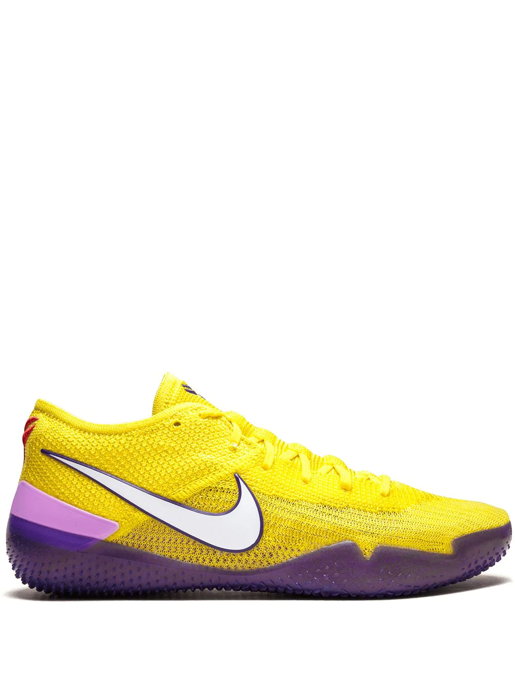
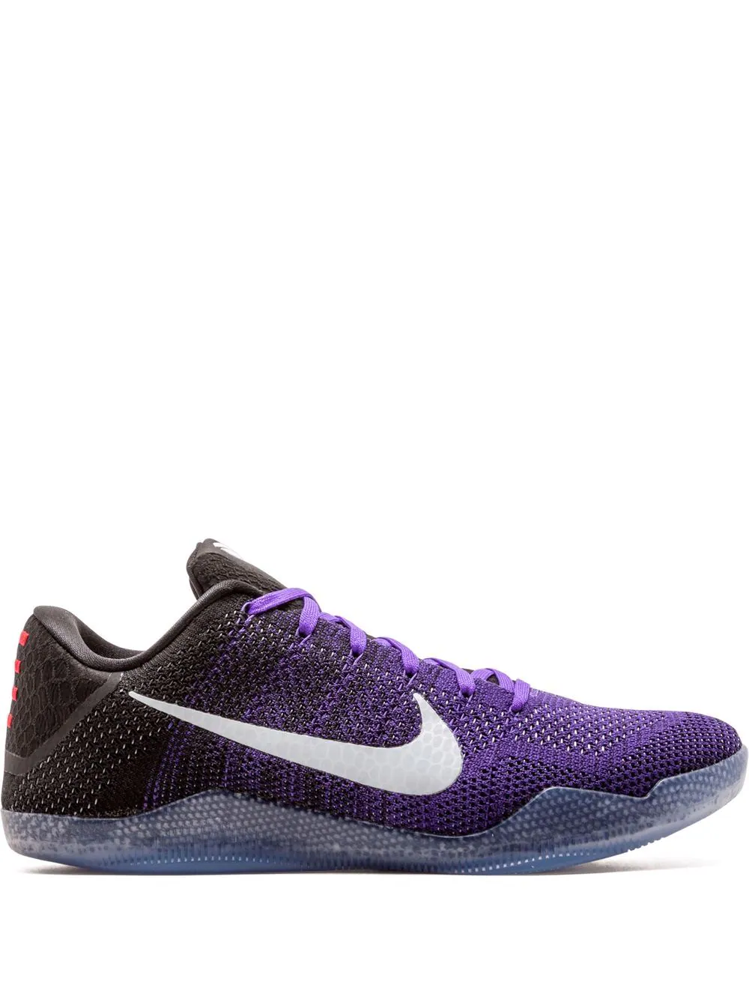
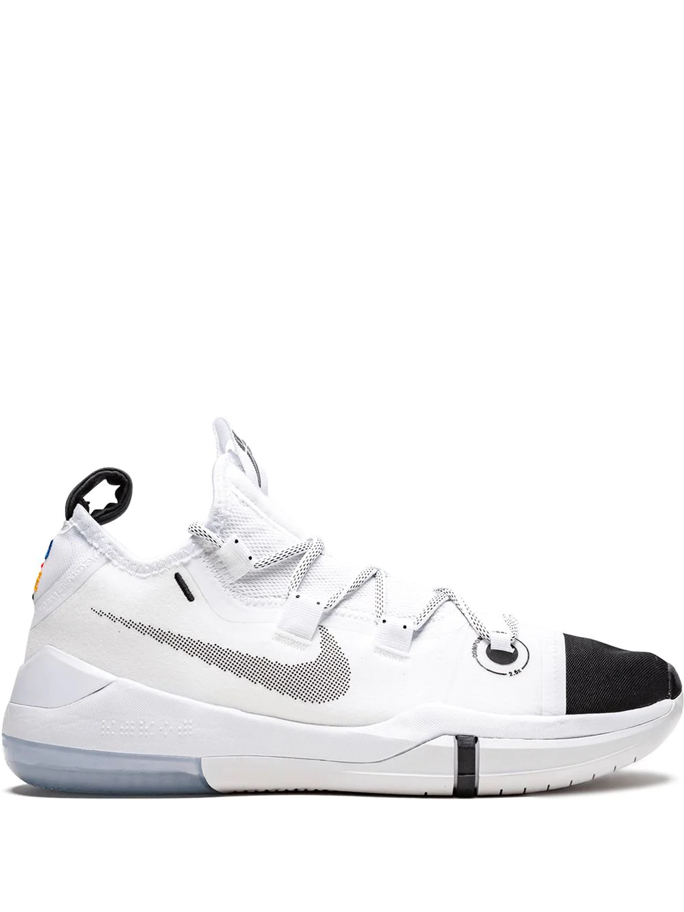

Nearly fifty years after its conception in 1971, Nike’s iconic Swoosh logo remains unchanged, showcasing a prevalent and pioneering symbol for the brand. Presented in yellow and purple, these Kobe AD NXT 360 sneakers feature a round toe, a lace-up front fastening, a signature Nike swoosh, a rubber sole and purple accents on the translucent cushioned outsole and tongue. These styles are supplied by a premium sneaker and street wear marketplace. Stocking only the most sought-after footwear and clothing, they source and curate some of the most hard-to-find items from around the world. ($435)
A sharkskin-inspired heel-counter on these Nike Kobe 11 Elite Low sneakers gives a nod to Bryant’s fearlessness, whilst the four lines to the left heel symbolise his Achilles injury. These details appear on a Flyknit construction for a lightweight feel. ($225)
Supplied by a premier sneaker marketplace dealing with unworn, already sold out, in demand rarities. Each product is rigorously inspected by experienced experts guaranteeing authenticity. You'll be sure to make a slam dunk. With these white Kobe AD low-top sneakers from Nike, the simple lace front fastening and soft knitted upper make a comfortable addition to any activity you may choose. Featuring a round toe, a flat rubber sole, a lace fastening, a signature Nike swoosh, a branded insole and a pull tab at the rear. ($320)